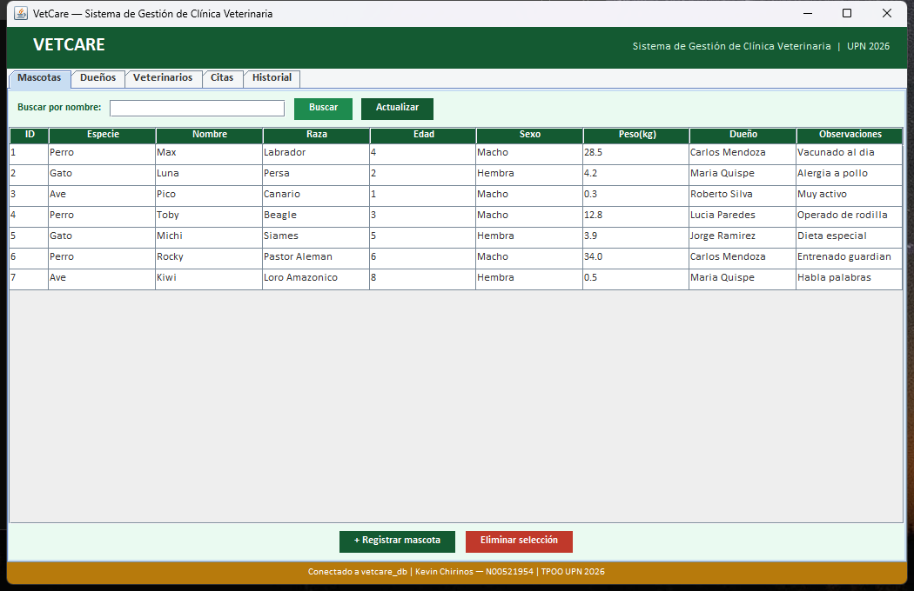
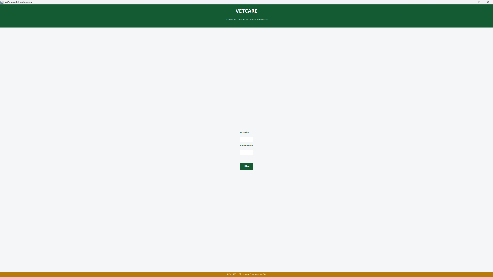
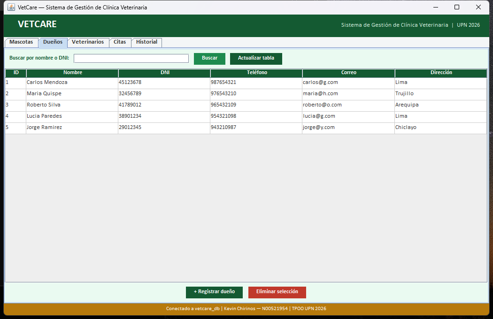
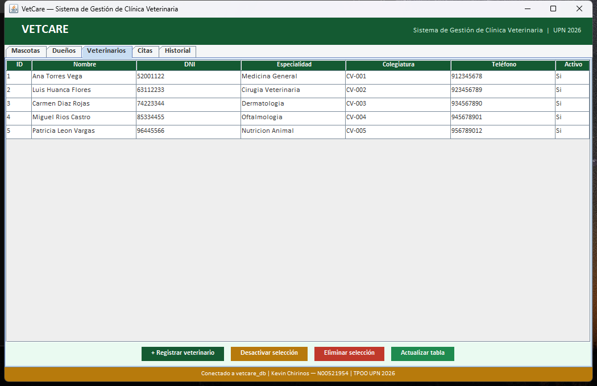
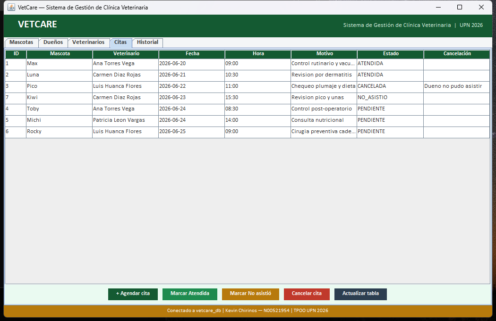
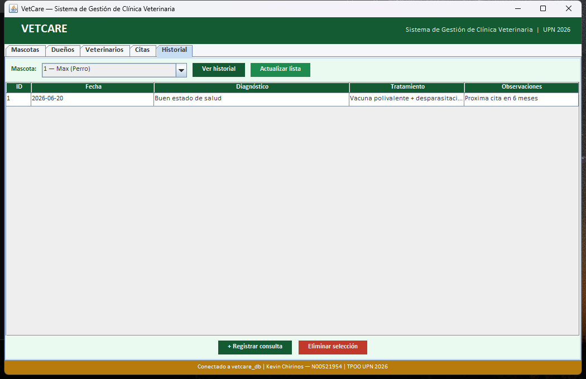

VetCare es un sistema de escritorio desarrollado en Java que permite gestionar una clínica veterinaria: registrar dueños y mascotas, agendar citas con veterinarios y llevar el historial médico de cada animal. El proyecto integra los tres módulos del sílabo: fundamentos POO, relaciones entre clases y programación visual con base de datos.
1.1 Clases, Objetos y Modificadores de Acceso
modelo/Dueno.java · modelo/Veterinario.java Semana 1Cada entidad del mundo real (dueño, veterinario, mascota) se modela como una clase. Los atributos son private y el acceso se hace exclusivamente mediante getters y setters, aplicando el principio de encapsulamiento.
public class Dueno extends Persona { private String direccion; // atributo encapsulado public Dueno(int id, String nombre, String dni, String telefono, String correo, String direccion) { super(id, nombre, dni, telefono, correo); // llama al constructor padre this.direccion = direccion; } public String getDireccion() { return direccion; } // getter public void setDireccion(String d) { direccion = d; } // setter }
private y métodos public que representan el contrato de acceso al objeto.
src/vetcare/modelo/Dueno.java — Clase completa implementada con campos private, getters/setters y constructor completo. Ver código fuente en el repositorio.
1.2 Sobrecarga de Constructores (Overloading)
modelo/ConsultaMedica.java Semana 2La clase ConsultaMedica tiene 3 constructores con diferente firma: uno sin observaciones, uno con observaciones y uno completo con todos los campos desde BD. Esto es sobrecarga porque el mismo nombre de método acepta distintos parámetros.
public class ConsultaMedica { // Constructor 1: básico (diagnóstico + tratamiento) public ConsultaMedica(int idMascota, String diagnostico, String tratamiento) { this(idMascota, diagnostico, tratamiento, ""); } // Constructor 2: con observaciones public ConsultaMedica(int idMascota, String diagnostico, String tratamiento, String observaciones) { ... } // Constructor 3: reconstrucción desde BD (incluye id y fecha) public ConsultaMedica(int id, int idMascota, String fecha, String diagnostico, String tratamiento, String observaciones) { ... } }
1.3 Variables y Métodos static · Constantes final
gestion/SistemaVetCare.java · gui/LoginFrame.java Semana 2Las credenciales del administrador se declaran como static final: static porque pertenecen a la clase (no a cada instancia) y final porque su valor no cambia en tiempo de ejecución. Son constantes de clase.
public class SistemaVetCare { // Constante de clase: compartida por TODAS las instancias, nunca cambia private static final String USUARIO_ADMIN = "admin"; private static final String CLAVE_ADMIN = "vetcare2026"; // Colección de objetos gestionados por el sistema private List<Mascota> mascotas = new ArrayList<>(); private List<Dueno> duenos = new ArrayList<>(); private List<Veterinario> veterinarios = new ArrayList<>(); private List<Cita> citas = new ArrayList<>(); }
static final define constantes; ArrayList implementa la interfaz List del framework de colecciones Java.
1.4 Colecciones y Control de Versiones (Git)
gestion/SistemaVetCare.java · GitHub Semanas 1-3El sistema usa colecciones genéricas (List<T>, ArrayList<T>) para almacenar y recorrer objetos. El repositorio está en GitHub con historial de commits, ramas y mensajes convencionales (feat:, fix:).
// Búsqueda funcional con stream() — Java 8+ public Mascota buscarMascota(String nombre) { return mascotas.stream() .filter(m -> m.getAnimal().getNombre().equalsIgnoreCase(nombre)) .findFirst() .orElse(null); } // Iteración con for-each for (Mascota m : mascotas) { System.out.println(m.getAnimal().getNombre()); }
github.com/webskechiza/Tecnicas-Programacion-OOP — Branch master con historial de commits: init, estructura de paquetes, modelos, capa DB, GUI completa, fix tildes/ñ.
2.1 Herencia (Inheritance)
modelo/Animal.java → Perro / Gato / Ave.java Semana 4VetCare implementa dos jerarquías de herencia independientes:
Animal(abstracta) →Perro,Gato,AvePersona(abstracta) →Dueno,Veterinario
Las subclases heredan atributos comunes (nombre, raza, edad para Animal; dni, telefono para Persona) y cada una añade lo que le es propio.
// Superclase abstracta — define el contrato public abstract class Animal { protected String nombre, raza, sexo; protected int edad; protected double peso; public abstract String getEspecie(); // obliga a las subclases a implementarlo } // Subclase Perro — hereda y especializa public class Perro extends Animal { private String tamano; // atributo propio de Perro @Override public String getEspecie() { return "Perro"; } } // Subclase Gato — atributo propio distinto public class Gato extends Animal { private boolean castrado; // solo Gato tiene este campo @Override public String getEspecie() { return "Gato"; } }
2.2 Polimorfismo (Overriding)
modelo/Perro.java · Gato.java · Ave.java Semana 4El polimorfismo permite tratar objetos de distintas subclases de forma uniforme. Un mismo tipo de referencia Animal puede apuntar a un Perro, un Gato o un Ave, y el método getEspecie() retorna el valor correcto según el objeto real en memoria (ligadura dinámica).
Animal a1 = new Perro("Rex", "Labrador", 3, "Macho", 25.5, "Grande"); Animal a2 = new Gato("Michi", "Siamés", 2, "Hembra", 4.2, true); Animal a3 = new Ave("Pico", "Canario", 1, "Macho", 0.3, "Recto"); Animal[] animales = {a1, a2, a3}; for (Animal a : animales) { System.out.println(a.getEspecie()); // → "Perro", "Gato", "Ave" // Java llama al método correcto en tiempo de EJECUCIÓN }
a.getEspecie()) produce resultados distintos según el tipo real del objeto. Esto permite que la GUI muestre el formulario correcto al registrar cada especie.

2.3 Clases Abstractas e Interfaces Genéricas
modelo/Animal.java · modelo/Persona.java · IGestionable.java Semana 4Una clase abstracta no puede instanciarse directamente; define estructura y comportamiento obligatorio para sus subclases. Una interfaz genérica define un contrato sin implementación, que puede ser adoptado por cualquier clase.
// Clase abstracta — no se puede crear new Animal() public abstract class Animal { public abstract String getEspecie(); // cada subclase DEBE implementar esto } // Interfaz genérica — contrato de gestión CRUD public interface IGestionable<T> { void agregar(T entidad); boolean eliminar(int id); T buscar(int id); List<T> listarTodos(); } // SistemaVetCare implementa IGestionable para Mascota public class SistemaVetCare implements IGestionable<Mascota> { @Override public void agregar(Mascota m) { mascotas.add(m); } ... }
Animal y Persona son abstractas porque no tiene sentido crear un "Animal genérico" sin saber si es Perro, Gato o Ave. La interfaz IGestionable<T> garantiza que cualquier gestor ofrezca las 4 operaciones CRUD.
2.4 Composición y Agregación
modelo/Mascota.java · gestion/SistemaVetCare.java Semana 5Composición (relación fuerte): Mascota contiene un Animal y un Dueno. Si la mascota se elimina, sus partes también dejan de tener sentido en ese contexto.
Agregación (relación débil): SistemaVetCare tiene una lista de Mascota; los objetos pueden existir independientemente del sistema.
// Composición — Mascota ES una combinación de Animal + Dueno public class Mascota { private final Animal animal; // compone un Animal private final Dueno dueno; // compone un Dueno private String observaciones; public Mascota(Animal animal, Dueno dueno, String obs) { this.animal = animal; this.dueno = dueno; this.observaciones = obs; } } // Agregación — SistemaVetCare TIENE mascotas (no las crea, las recibe) public class SistemaVetCare { private List<Mascota> mascotas = new ArrayList<>(); }
| Relación | Clases involucradas | Símbolo UML | ¿Qué pasa si se elimina el contenedor? |
|---|---|---|---|
| Composición | Mascota ◆ Animal, Mascota ◆ Dueno | ◆──── | Las partes dejan de tener sentido |
| Agregación | SistemaVetCare ◇ Mascota | ◇──── | Los objetos siguen existiendo independientemente |
| Herencia | Animal → Perro/Gato/Ave | △──── | La subclase hereda todo del padre |
2.5 Tipos Enumerados (Enum)
modelo/Cita.java Semana 4La clase Cita usa un enum para representar el estado de la cita. Un enum es un tipo especial de clase con un conjunto fijo de valores posibles, lo que evita errores de tipeo y valores inválidos (es más seguro que usar un String libre).
public class Cita { public enum Estado { PENDIENTE, ATENDIDA, CANCELADA, NO_ASISTIO } private Estado estado; public Cita(...) { this.estado = Estado.PENDIENTE; // toda cita inicia PENDIENTE } public void cancelar(String motivo) { this.estado = Estado.CANCELADA; this.motivoCancelacion = motivo; } }
enum es una clase especial de Java que implementa internamente un conjunto de constantes final static.
3.1 Interfaz Gráfica con Swing — JFrame, JPanel, JTabbedPane
gui/MainFrame.java · gui/LoginFrame.java Semana 6La interfaz de VetCare está construida con Java Swing. La arquitectura de ventanas es:
- LoginFrame: JFrame de 420×380 px con GridBagLayout para el formulario de acceso
- MainFrame: JFrame de 1050×680 px con JTabbedPane de 5 pestañas (Mascotas, Dueños, Veterinarios, Citas, Historial)
- Cada pestaña es un JPanel personalizado con BorderLayout (barra top, tabla central, botones bottom)
public class MainFrame extends JFrame { // Constantes de color compartidas por todos los paneles static final Color VERDE = new Color(0x14, 0x5A, 0x32); static final Color AMBAR = new Color(0xB7, 0x7A, 0x0C); private void construirUI() { JTabbedPane tabs = new JTabbedPane(); tabs.addTab("Mascotas", new PanelMascotas()); tabs.addTab("Dueños", new PanelDuenos()); tabs.addTab("Veterinarios", new PanelVeterinarios()); tabs.addTab("Citas", new PanelCitas()); tabs.addTab("Historial", new PanelHistorial()); } }
JComponent, que a su vez extiende JComponent → es un ejemplo de herencia de la biblioteca estándar de Java.

3.2 Tablas y Modelos de Datos — JTable · DefaultTableModel
gui/PanelDuenos.java · PanelMascotas.java · PanelCitas.java Semana 6Cada panel usa un JTable respaldado por un DefaultTableModel. El modelo separa los datos de la vista (patrón MVC): cuando los datos cambian, la tabla se actualiza automáticamente.
// Definición del modelo — columnas fijas, filas dinámicas private DefaultTableModel modelo; private void construirUI() { modelo = new DefaultTableModel( new String[]{"ID", "Nombre", "DNI", "Teléfono", "Correo", "Dirección"}, 0 ) { @Override public boolean isCellEditable(int r, int c) { return false; } // solo lectura }; tabla = new JTable(modelo); } // Carga de datos desde BD → tabla private void cargarTabla() { modelo.setRowCount(0); // limpia filas anteriores for (Dueno d : DuenoDB.listar()) modelo.addRow(new Object[]{d.getId(), d.getNombre(), ...}); }
JTable + DefaultTableModel implementa el patrón Modelo-Vista-Controlador: el modelo contiene los datos, la tabla solo los muestra.


3.3 Programación por Eventos — ActionListener
gui/PanelMascotas.java · gui/PanelCitas.java Semana 6Swing es orientado a eventos: cada botón, campo o combo tiene un listener (observador) que se ejecuta cuando el usuario interactúa. VetCare usa expresiones lambda (Java 8) para registrar los eventos de forma compacta.
// Lambda como ActionListener — equivale a una clase anónima btnNuevo.addActionListener(e -> abrirFormulario()); // clic → abre diálogo btnEliminar.addActionListener(e -> eliminar()); // clic → elimina fila btnRef.addActionListener(e -> cargarTabla()); // clic → recarga desde BD // Evento dinámico en ComboBox — cambia el label según la especie cbEspecie.addActionListener(e -> { String esp = (String) cbEspecie.getSelectedItem(); if ("Perro".equals(esp)) lblExtra.setText("Tamaño (Pequeño/Mediano/Grande):"); else if ("Gato".equals(esp)) lblExtra.setText("Castrado? (true/false):"); else lblExtra.setText("Tipo de pico (Curvo/Recto/Ganchudo):"); });
3.4 Conectividad con MySQL — JDBC · Patrón Singleton
db/ConexionDB.java Semana 7ConexionDB implementa el patrón Singleton: garantiza que solo exista una conexión a MySQL en toda la aplicación. Usa DriverManager.getConnection() del API JDBC para conectar al servidor.
public class ConexionDB { private static final String URL = "jdbc:mysql://localhost:3306/vetcare_db" + "?useSSL=false&serverTimezone=UTC"; private static final String USUARIO = "root"; private static final String CLAVE = "vetcare2026"; private static Connection instancia; // única instancia en memoria public static Connection getConexion() throws SQLException { if (instancia == null || instancia.isClosed()) { // Solo se conecta si no existe conexión activa instancia = DriverManager.getConnection(URL, USUARIO, CLAVE); } return instancia; } }
DriverManager es el puente entre Java y MySQL; la URL JDBC especifica el protocolo, host, puerto y nombre de la base de datos.

3.5 Operaciones CRUD — PreparedStatement · Patrón DAO
db/DuenoDB.java · MascotaDB.java · CitaDB.java · ConsultaDB.java Semana 7Cada entidad tiene su propia clase DAO (Data Access Object) con los 4 métodos CRUD. Se usan PreparedStatement (consultas parametrizadas) en lugar de concatenar SQL, lo que evita inyección SQL.
public class DuenoDB { // CREATE — inserta un nuevo dueño public static void insertar(Dueno d) throws SQLException { String sql = "INSERT INTO duenos(nombre,dni,telefono,correo,direccion)" + " VALUES(?,?,?,?,?)"; // ← parámetros seguros try (PreparedStatement ps = ConexionDB.getConexion().prepareStatement(sql)) { ps.setString(1, d.getNombre()); ps.setString(2, d.getDni()); ps.executeUpdate(); } } // READ — devuelve lista de dueños public static List<Dueno> listar() throws SQLException { List<Dueno> lista = new ArrayList<>(); try (ResultSet rs = ConexionDB.getConexion() .createStatement().executeQuery("SELECT * FROM duenos")) { while (rs.next()) lista.add(new Dueno(rs.getInt("id"), rs.getString("nombre"), ...)); } return lista; } // DELETE — elimina por ID public static void eliminar(int id) throws SQLException { try (PreparedStatement ps = ConexionDB.getConexion() .prepareStatement("DELETE FROM duenos WHERE id=?")) { ps.setInt(1, id); ps.executeUpdate(); } } }
| Clase DAO | Tabla MySQL | Operaciones |
|---|---|---|
| DuenoDB | duenos | listar, insertar, eliminar, existeDni, buscarPorDni |
| VeterinarioDB | veterinarios | listar, insertar, actualizarActivo, eliminar, buscarPorId |
| MascotaDB | mascotas (JOIN duenos) | listar, insertar, eliminar |
| CitaDB | citas (JOIN mascotas, veterinarios) | listarFilas, insertar, actualizarEstado, eliminar, hayConflicto |
| ConsultaDB | consultas | listarPorMascota, insertar, eliminar |
PreparedStatement compila la consulta SQL una vez y la ejecuta con distintos valores, siendo más eficiente y seguro que Statement.

3.6 Diseño de Base de Datos Relacional
Desarrollo/vetcare_db.sql Semana 7La base de datos vetcare_db tiene 5 tablas relacionadas mediante claves foráneas. Se usa charset utf8mb4 para soportar tildes y caracteres especiales.
vetcare-mysql).
| Unidad | Semana | Concepto del Sílabo | Dónde está en VetCare | Cómo se aplica |
|---|---|---|---|---|
| I | 1 | Clases y objetos, modificadores | Dueno, Veterinario, Mascota, Cita | campos private + getters/setters |
| 2 | Sobrecarga de métodos | ConsultaMedica | 3 constructores con distinta firma | |
| 2 | static final, variables estáticas | SistemaVetCare, LoginFrame | USUARIO_ADMIN, CLAVE_ADMIN, constantes de color | |
| 2 | Colecciones (List, ArrayList) | SistemaVetCare | List<Mascota>, List<Cita>, stream().filter() | |
| 1-3 | Control de versiones (Git) | Repositorio GitHub | commits feat/fix, ramas, historial | |
| II | 4 | Herencia | Animal→Perro/Gato/Ave, Persona→Dueno/Vet. | extends, super(), atributos heredados |
| 4 | Polimorfismo | getEspecie() en Perro, Gato, Ave | @Override, ligadura dinámica | |
| 4 | Clases abstractas, interfaces | Animal (abstract), IGestionable<T> | abstract class, implements, generics | |
| 5 | Composición y Agregación | Mascota ◆ Animal + Dueno | campo Animal final dentro de Mascota | |
| III | 6 | Swing — JFrame, JPanel | LoginFrame, MainFrame | extends JFrame, BorderLayout, header/footer |
| 6 | Componentes gráficos | JTable, JComboBox, JButton, JScrollPane | DefaultTableModel, ActionListener lambda | |
| 6 | Eventos | Todos los botones y combos | addActionListener(e → método()) | |
| 7 | JDBC, conexión SQL | ConexionDB (Singleton) | DriverManager.getConnection(url, user, pass) | |
| 7 | CRUD a tablas | DuenoDB, VeterinarioDB, MascotaDB, CitaDB, ConsultaDB | PreparedStatement INSERT/SELECT/UPDATE/DELETE |
VetCare sigue una arquitectura en 3 capas, patrón estándar en aplicaciones de escritorio Java:
| Capa | Paquete | Responsabilidad | Tecnología |
|---|---|---|---|
| Presentación | vetcare.gui | Mostrar datos, recibir entrada del usuario | Java Swing |
| Lógica / Modelo | vetcare.modelo, vetcare.gestion | Reglas de negocio, entidades del dominio | Java POO |
| Datos | vetcare.db | Leer y escribir en MySQL | JDBC + MySQL 8.0 |
La GUI llama directamente a las clases DAO (simplificando la arquitectura para el alcance del proyecto). ConexionDB actúa como puerta de entrada única a la base de datos, implementando el patrón Singleton.